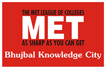

Collage Name:MET BKC Polytechnic
Subject Name:Web Page Designing

MET Bhujbal Knowledge City (BKC) in Adgaon, Nashik, is a premier 34-acre campus established by the Mumbai Educational Trust (MET) in 1989. It offers diverse, NBA-accredited, and AICTE-approved programs in Engineering, Management, Pharmacy, and Polytechnic. The campus features modern infrastructure, high-end IT labs, and active placement support with packages up to 15 LPA. Location: Adgaon, Nashik, Maharashtra. Institutes: Institute of Engineering: Offers B.E. and specialized programs. Institute of Management: Offers MBA programs affiliated with Savitribai Phule Pune University. Institute of Pharmacy: Offers D. Pharm and B. Pharm programs. Institute of Technology (Polytechnic): Offers diploma courses in engineering (Mechanical, Civil, IT, Computer & Electrical). Campus Facilities: Spans over 34 acres, featuring lush green landscapes, modern IT infrastructure, well-equipped labs, and separate hostels for boys (4 km away) and girls (on-campus). Accreditations & Awards: Programs are accredited by the National Board of Accreditation (NBA). It has received awards like the Brand Excellence Award from ABP-MAZA and 1st Runner Up in AIMS Convention. Placements: IT sector students have reported high packages up to 15 Lakhs per annum (LPA), with internship stipends ranging from 5k to 20k. Admission: Based on DTE (Directorate of Technical Education) rules and regulations. Contact Information Address: Adgaon, Nashik - 422003 Email: enquiries@bkc.met.edu Phone: 0253-2303515, 9881100099
Name:Ritima Anil Chaudhari
MET's institute os technology polytechnic bhujbal knowledge city